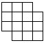

习题五
1.有100个自然数，它们的和是偶数.在这100个自然数中，奇数的个数比偶数的个数多.问：这些数中至多有多少个偶数？
2.有一串数，最前面的四个数依次是1、9、8、7.从第五个数起，每一个数都是它前面相邻四个数之和的个位数字.问：在这一串数中，会依次出现1、9、8、8这四个数吗？
3.求证：四个连续奇数的和一定是8的倍数。
4.把任意6个整数分别填入右图中的6个小方格内，试说明一定有一个矩形，它的四个角上四个小方格中的四个数之和为偶数。
5.如果两个人通一次电话，每人都记通话一次，在24小时以内，全世界通话次数是奇数的那些人的总数为____。
（A）必为奇数，（B）必为偶数，
（C）可能是奇数，也可能是偶数。
6.一次宴会上，客人们相互握手.问握手次数是奇数的那些人的总人数是奇数还是偶数。
7.有12张卡片，其中有3张上面写着1，有3张上面写着3，有3张上面写着5，有3张上面写着7.你能否从中选出五张，使它们上面的数字和为20？为什么？
8.有10只杯子全部口朝下放在盘子里.你能否每次翻动4只杯子，经过若干次翻动后将杯子全部翻成口朝上？
9.电影厅每排有19个座位，共23排，要求每一观众都仅和它邻近（即前、后、左、右）一人交换位置.问：这种交换方法是否可行？
10.由14个大小相同的方格组成下列图形（右图），请证明：不论怎样剪法，总不能把它剪成7个由两个相邻方格组成的长方形.
